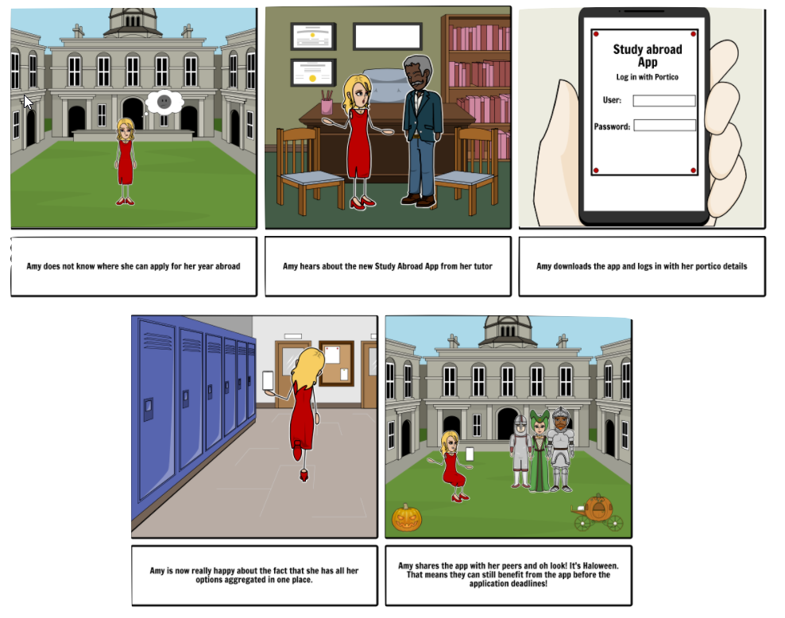

The new mobile app that makes applying to internationally renowned universities easier than ever.
Intro
//Pic of prototype front screen here?//
How 2-Study Abroad is a mobile application designed to help UCL students with applying to the Study Abroad Program during their third year.
This application allows students to login using their UCL credentials to view information about the Study Abroad process, the institutions they can apply to, and allows them to upload supporting documents to apply to the program directly from the app.
This website shows the iterative, user-centred process of development a prototype for this application, and includes citations to HCI and design literature we referenced along the way.
We began the design process by conducting an interview with our client to establish the essential requirements of the app. Our interview was semi-structured, and we used Interaction Design - Beyond HCI to help design our open-ended questions. We recorded data by taking note separately and comparing afterwards, and drew up this list of requirements:
Functional Requirements
Prospective students can input subjects and grades and return applicable institutions
Information about visa requirements
App returns universities suitable for specific student and personalised next steps
Information about costs of different unis
Apply directly to the program via app
Attach required documentation through app
See what courses other people are interested in
List your favourite institutions
Non-Functional Requirements
Mobile app compatible with iOS and Android
Login using the UCL API
App is more user-friendly than Portico application process
Next we gathered data from some potential users, by sending out a questionnaire via Facebook and asking students who were interested in the Study Abroad program to fill it in. We went through several iterations of questionnaire, using Interaction Design - Beyond HCI to design effective questions. The results of the questionnaire were:
We wanted to gather relevant user data in several different ways, and the disadvantages of questionnaires also conducted a focus group. We used open-ended questions to faciliate a discussion between potential users, collecting data by taking notes as some of our participants did not consent to video/audio recording. Many of the comments we recieved were very consistent with the questionnaires, a summary of which can be seen below:
We used these comments and our questionnaire results to draw up this list of user requirements additional to the given client requirements:
Must Have
Information about the suggested grades you will need to go to high/medium/low demand universities
Information about visas
Detailed information about how/when to apply and the deadlines
Ranking system for institutions based primiarly on league table ranking and grade requirements
Should Have
List of FAQs about the study abroad program
Travel and finance information about the cities that the institutions are in
Could Have
Contact information for the external tutor for your course, and the study abroad team
After establishing our requirements, we created 3 user personas for 3 different potential student users; a first-year student, a second-year student, and an international student. We used the book Making Use: Scenario-Based Design of Human-Computer Interactions to design the personas, and they can be found below:
Johnny is a first-year maths student who has heard about the Study Abroad program from his peers in the year above him. He wants to find out more about the institutions he might be able to apply to in the future, but can’t attend the events aimed at second-years. Johnny is just looking for some casual information, and can’t be bothered to do lots of research himself. One of his friends on his course tells him about the Study Abroad app, which he downloads from the iOS App Store. Johnny creates an account, and can’t fill in any details about grades but enters his department. He is then presented with a list of universities the Maths department offers, and information about the lifestyles in those cities. He is really interested in some of them, and decides he might want to apply when he is in second year. Johnny doesn’t need any of the information about visas or applying through the app, but selects some of his favourite unis so he remembers for next year.
Eddie Dixon's story
Eddie is a second-year international student that has been interested in the Study Abroad program since the start of term, and has discussed his options with his External Tutor already. He is almost ready to apply, however he still needs some information about his visa requirements, tuition fees and living costs that his tutor can’t help him with. His tutor recommends he consults the Study Abroad app - Eddie had already made an account, so logs in to check his favourited institutions and the FAQs about visas etc. Eddie is ready to apply, but is confused by the portico process, so chooses to upload his application and send it off via the app.
Amy Wilson's story
Amy went to the Study Abroad information session in the History department, and is interested in pursuing the program. She has brilliant grades and is not restricted in where she can apply to, but as she works so hard, she does not have time to research all of the universities that her department offers. The Study Abroad team can’t advise her on which are the best universities to take good History classes, so they suggest she downloads the Study Abroad app to get information that is tailored to her course. Amy creates an account, and enters all the details about her course, the modules she has taken and her grades. She then looks through all of the institutions and compares their living costs, classes, distance from home, and lifestyles. She also looks at where other people from her course have applied to, to get a good idea of where History students are best placed. She also uses the app to get the contact information for her external tutor, so that she can discuss her choices before she applies.
True stories! :O

Prototype page
Evaluation Page
User Storyboards
We decided to also talk to our clients, UCL students to see what exactly they would expect from this our Application. These are the main concerns that every student seemed to care about:
Information about the suggested grades you will need to go to high/medium/low demand universities
Contact information for the external tutor for your course, and the study abroad team
List of FAQs about the study abroad program
A detailed list of all the next steps you need to take in your department and the deadlinese
App Prototype
We decided to also talk to our clients, UCL students to see what exactly they would expect from this our Application. These are the main concerns that every student seemed to care about:
Information about the suggested grades you will need to go to high/medium/low demand universities
Contact information for the external tutor for your course, and the study abroad team
List of FAQs about the study abroad program
A detailed list of all the next steps you need to take in your department and the deadlinese
Evaluation
We decided to also talk to our clients, UCL students to see what exactly they would expect from this our Application. These are the main concerns that every student seemed to care about:
Information about the suggested grades you will need to go to high/medium/low demand universities
Contact information for the external tutor for your course, and the study abroad team
List of FAQs about the study abroad program
A detailed list of all the next steps you need to take in your department and the deadlinese